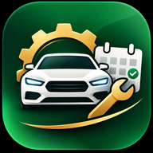

Car Maintenance Tracker App — no subscription, works offline
AutoLog is a car maintenance tracker for people who want to keep service records for their own vehicles in one place. It answers three questions: what is due next, what has it cost so far, and when do my insurance, registration and inspection run out.
Get it on EtsyOne-time purchase. No subscription.
What it does
- Keep a list of vehicles with fuel type (gasoline, diesel, electric, hybrid, LPG) and mileage in miles or kilometers.
- Create a default maintenance schedule (oil, filters, brakes, tires and more), then adjust it to your car.
- Set each item by distance, by months, or both. Whichever comes first makes it due.
- Mark a service as done to log a record and update the schedule and the vehicle's mileage.
- Track insurance, registration and inspection expiry dates with Valid, Expires soon and Expired labels.
- Dashboard with a vehicle health score: the share of active schedule items that are up to date.
- Log expenses for every service and see monthly costs, cost by category, a yearly total and cost per mile or kilometer.
- Print a service history or a vehicle card (Letter, A4 or 80 mm receipt roll), with an optional business name on top.
- Share a reminder or a service summary by WhatsApp or SMS: the app opens the message and you send it yourself.
How it works
- You buy it once on Etsy and download the file in a web browser (the Etsy phone app cannot download digital files).
- On a computer, you open the app file in your browser. On a phone, you open the app's web address in Safari (iPhone) or Chrome (Android) and choose Add to Home Screen (Android: Install app).
- Your data stays on your device. There is no account and no subscription.
- After the first load it works without internet.
- Languages: English, Spanish, French, German and Turkish.
What it does not do
- No cloud sync between devices: your phone and your computer each keep their own data. Move it with the backup file.
- No team or shared accounts.
- No automatic messages: WhatsApp and SMS reminders open ready-made text that you send yourself.
- It does not read data from your car or connect to any vehicle service.
Questions
Is AutoLog a subscription?
No. You buy it once on Etsy and keep it. There is no monthly fee, no account and no renewal.
Does this car maintenance tracker work offline?
Yes. After the first load it needs no internet. Your vehicles, services and costs are stored on your own device.
Can I track more than one vehicle?
Yes. Each vehicle has its own schedule, expiry dates, service records and reports.
Does it remind me when a service is due?
It shows what is due or coming up on the dashboard and in each schedule, and lets you send a reminder by WhatsApp or SMS. It does not push notifications by itself.
Can I move my data to a new phone?
Yes. Download a backup file in Settings and restore it on the other device.